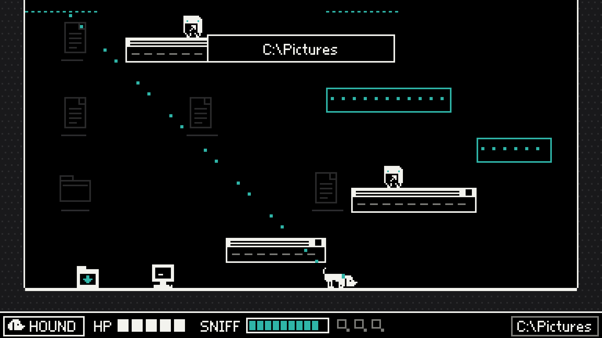
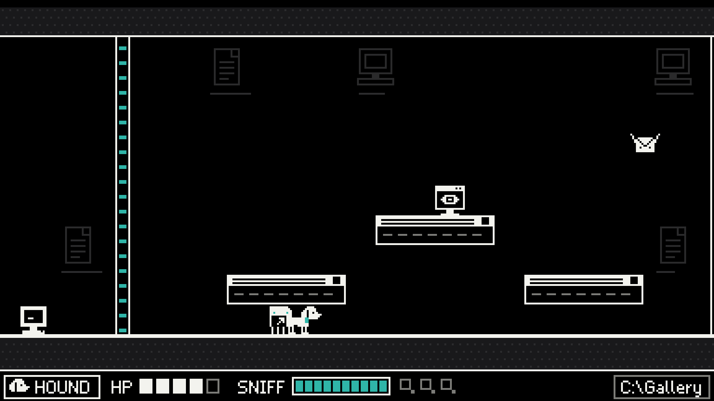
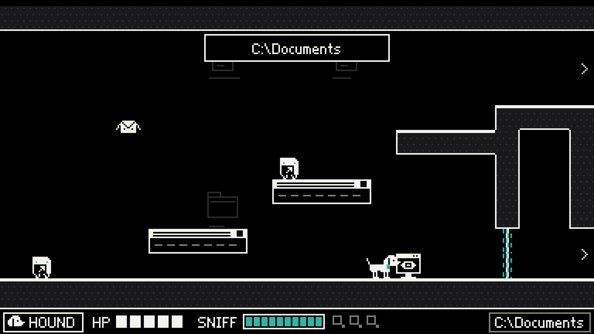
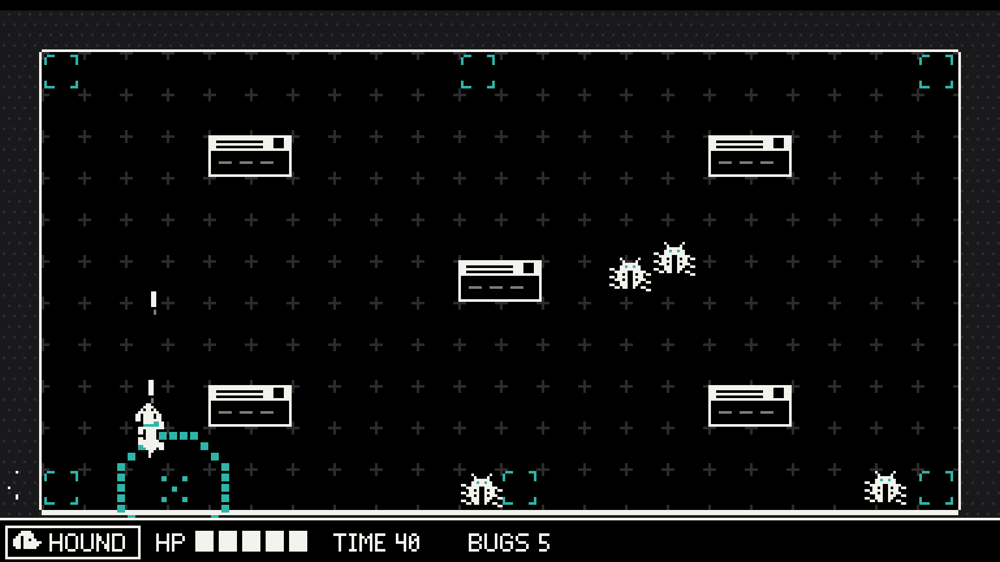
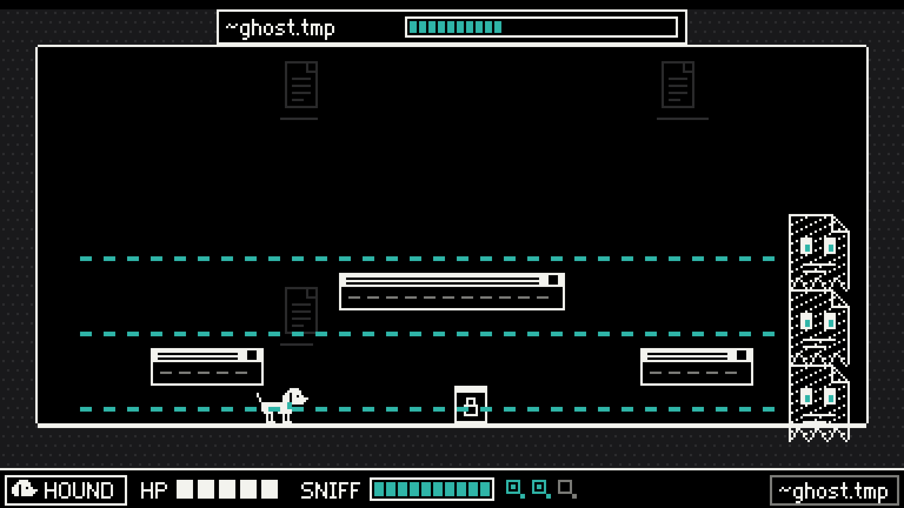
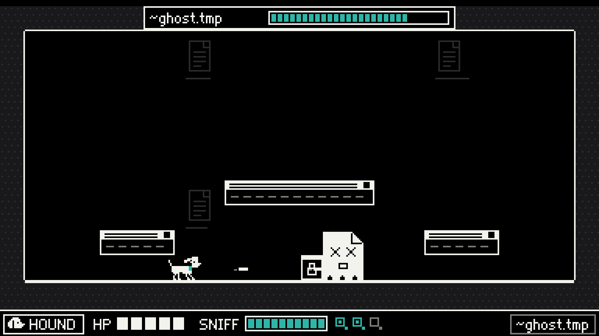

Your nose is a key
Hold sniff and time slows down. Hidden files turn solid, fake walls give way, buried clues surface and every bug shows where it hurts. Shots at a weak point deal double damage.
In development · Planned for Steam
Good dog.
Bad files.
A 1-bit action metroidvania inside an infected computer. You are a sniffer dog with a debugger for a blaster. Run, dash and shoot through the folders, and follow your nose to what the system is hiding.
Hold Shift or press SNIFF. Three clues are buried on this page.

Hold sniff and time slows down. Hidden files turn solid, fake walls give way, buried clues surface and every bug shows where it hurts. Shots at a weak point deal double damage.

Walk into the wrong folder and the gates slam shut. Clear the waves of bugs to get out, and the shortcut home unlocks behind you.

The dash chip is more than a dodge. It carries you through lasers and across bad sectors, back into folders that turned you away before.

Go deep into a process and the camera flips overhead for a 45-second twin-stick fight. The floor corrupts wherever you stop, so never stand still.
Eleven interconnected rooms, where windows are platforms and folders are doors. Explore three wings to find three clues. The door at the end of the Trash will not open without them.
Platforms that only exist for seven seconds after you sniff them.
Footing that blinks in and out above a floor of bad sectors.
Gaps and lasers that take both your dash and your nose.
The bugs are very real.
Patrols every ledge it can stand on.
Stays put and fires. The eye warns you first.
Shakes, shows its line, then dives.
Closes in from every side of a process.
Something in the Trash refuses to be deleted. It turns intangible, charges and copies itself. Only your nose knows which one is real.


Black, white and a single accent, reserved for what you can play with. The original chiptune score tightens as the bugs get close.
You found all three clues, and the door at the end of the Trash is open. In the game, this is where the trouble starts.